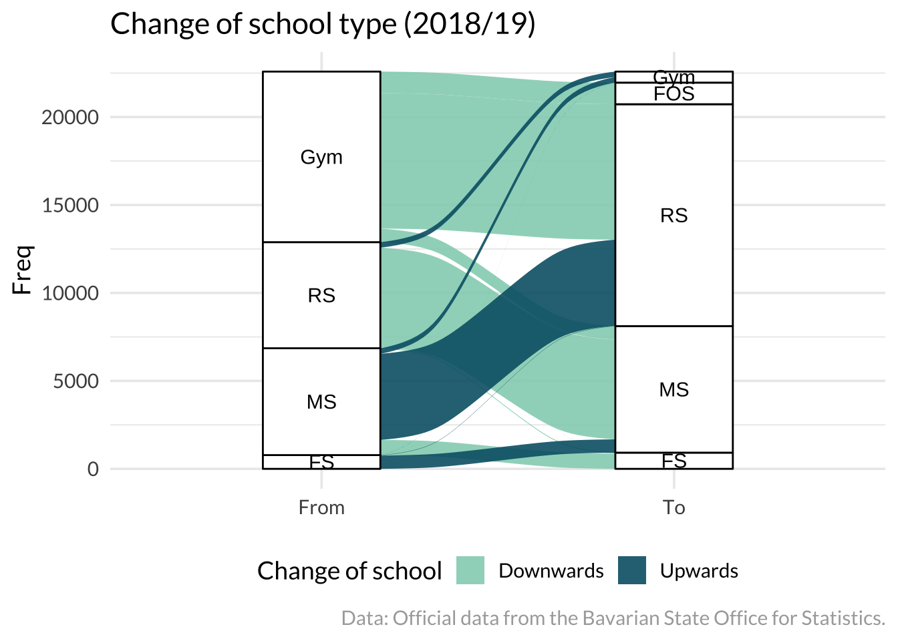
3 Ten additional geoms for ggplot2
The ggplot2 package is awesome to create visualizations. It offers a wide range of possibilities to create a lot visualizations, it even lets you create visualizations from the ground. Moreover, there are plenty of ggplot2 extensions packages: ggplot2 extensions are packages that provide additional geoms, stats, scales, and themes to ggplot2. These packages extend the possibilities of ggplot2.
I introduce in this article ten packages that provide an additional geom. (1) I describe each visualization briefly. (2) I show an example graph. (3) I provide a minimal code snippet to recreate such a graph with implemented data.
By relying on implemented data, you can easily recreate the graph without the need download or prepare data. The minimal code snippets are a great starting point to explore the possibilities of the ggplot2 extension packages.
3.1 Alluvial
Alluvial diagrams depict the flow of data between different categories. The width of the lines is proportional to the number of observations that flow from one category to another. For example, I used official data from German School Departments to depict the change of school types (downward and upward mobility) within a given year. As the plot shows, most pupils change to a lower school type and in consequence downward mobility is larger in Germany.
The ggalluvial package has implemented the geom_alluvium() and geom_stratum() functions to create alluvial plots (Brunson and Read 2020). The geom_alluvium() function creates the flow of data between categories, while the geom_stratum() function adds the categories to the plot. The minimal code example shows how to create an alluvial plot with the titanic data. Provide the data in a wide format.
#Minimal code example #####
library(ggplot2)
library(ggalluvial)
#A wide data format
titanic_wide_format <- data.frame(Titanic)
ggplot(data = titanic_wide_format,
aes(axis1 = Class, axis2 = Sex, axis3 = Age, y = Freq)) +
geom_alluvium(aes(fill = Survived)) +
geom_stratum()3.2 Beeswarm plots
Scatter plots are often used to visualize the relationship between two numerical variables. However, scatter plots can be difficult to interpret when there are many data points. A beeswarm plot is a great alternative to scatter plots, because it avoids over-plotting. Essentially, the beeswarm plot spreads the data points along the axis to avoid overlapping. For example, the following plot depicts body mass for each species and sex of the palmerpenguins data (Horst, Hill, and Gorman 2020).
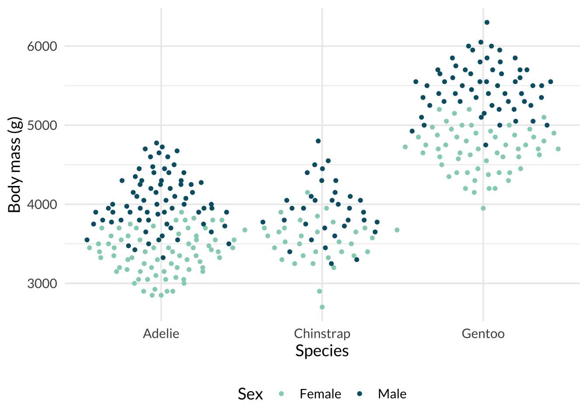
Use the geom_quasirandom() function from the ggbeeswarm package to create a beeswarm plot (Clarke and Sherrill-Mix 2017). The function spreads the data points along the axis to avoid overlapping. The method argument applies a specific algorithm to spread the data points. For example, pick quasirandom, pseudorandom, or smiley.
#Minimal code example #####
library(ggbeeswarm)
ggplot(penguins, aes(species, body_mass_g,
color = sex)) +
geom_quasirandom()3.3 Choropleth maps
A choropleth map is a great way to visualize geographical data. The color of each area is proportional to the observed value. The example plot shows the US unemployment rates in 2009.
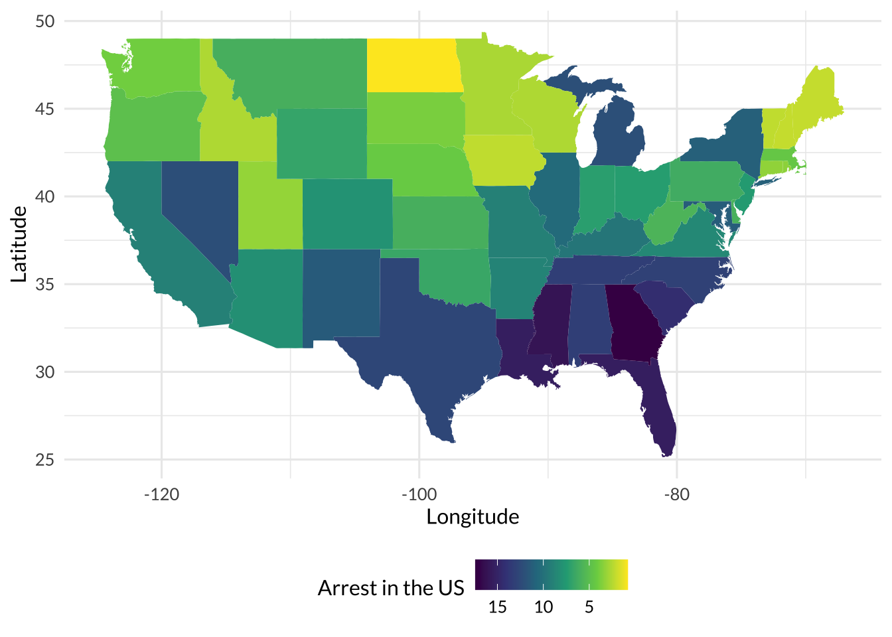
Creating a choropleth map can be tricky, because you need to match the data with the corresponding geographical areas.
Moreover, the shape of the geographical areas must be drawn before filling them with the observed value. The ggplot2 provides the geom_sf() function to create a map (Wickham et al. 2022). The sf package is used to handle spatial data (sf?). Moreover, the ggmap package helps to create maps (Kahle, Wickham, and Jackson 2019; Kahle and Wickham 2013), because it provides the geom_map() function. The function fills the geographical areas with the observed value.
The minimal code example shows how to create a choropleth map with the USArrests data. The minimal code does not need any additional package and shows an example from the ggplot2 cheat sheet. If the corresponding geographical areas can be matched with the data, geom_map() draws the map and fills each area.
#Minimal code example #####
#Source: This example comes from the ggplot2 cheat sheet!
map <- map_data("state")
data <- data.frame(murder = USArrests$Murder,
state = tolower(rownames(USArrests)))
ggplot(data, aes(fill = murder))+
geom_map(aes(map_id = state), map = map)+
expand_limits(x = map$long, y = map$lat)3.4 Dot-and-whisker plot: Copilot stopped here
A dot-and-whisker plot is a plot that shows the point estimates and confidence intervals of regression coefficients. It is a useful tool for visualizing the uncertainty associated with regression estimates. In the example below, I just run an example analysis with the palmerpenguins data.
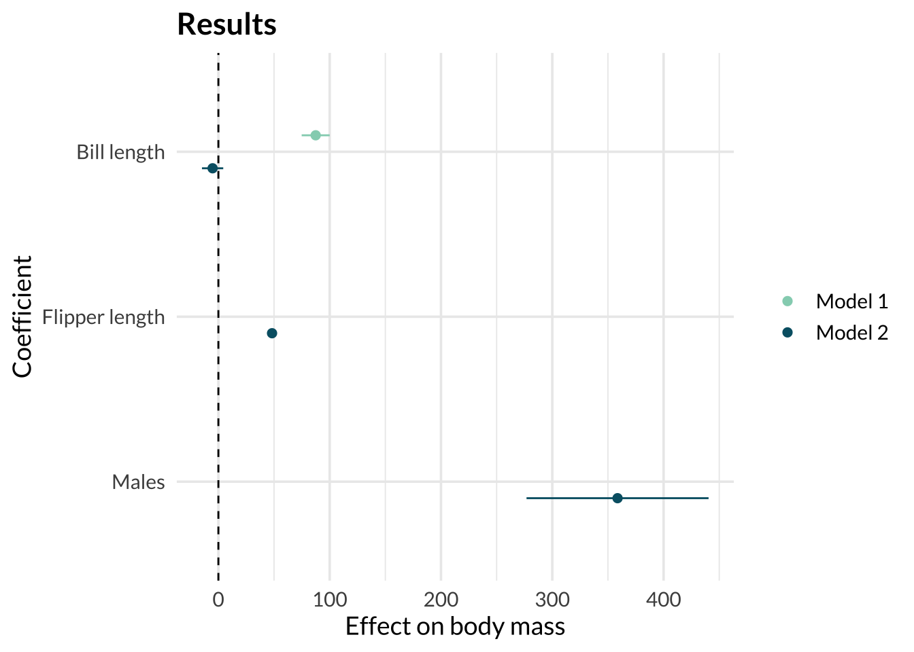
The dotwhisker package creates dot-and-whisker plots. It allows users to customize the appearance of the plot by adjusting various parameters such as the color and size of the dots and whiskers. However, if you need to come up with a quick solution, the jtools package also implements convenient solutions.
library(dotwhisker)
library(palmerpenguins)
m1 <- lm(flipper_length_mm ~ bill_length_mm,
data = penguins)
m2 <- lm(flipper_length_mm ~ bill_length_mm + sex,
data = penguins)
dwplot(list(m1, m2),
vline = geom_vline(xintercept = 0))3.5 Dumbbell and lollipop charts
The ggcharts package is for the lazy cats and gives access to a lot of common charts (Neitmann 2020). The package has implemented graphs such as dumbbell and lollipop charts with its own functions, and we don’t have to create each step on our own.
For example, create a dumbbell or a lollipop chart. I used the former to examine how life expectancy increased between 1952 and 2007 based on the gapminder data. The example shows the top 10 European countries with the highest increase in life expectancy.
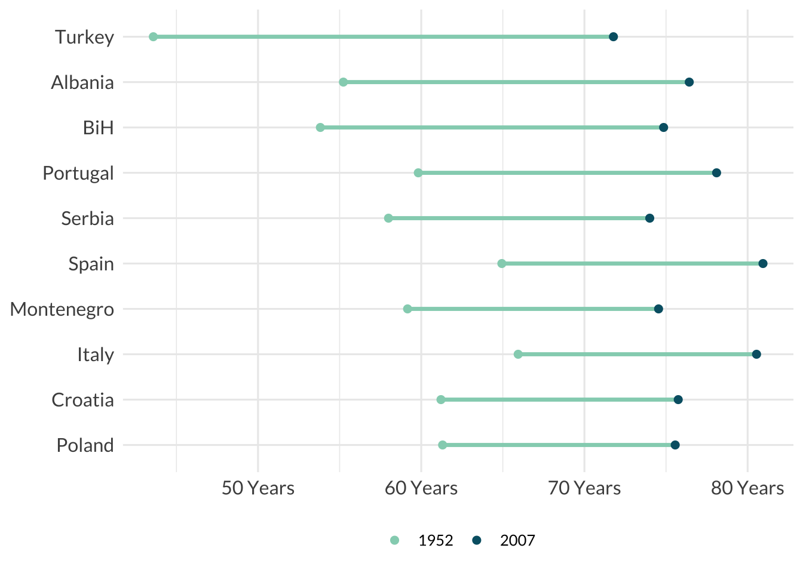
#Minimal code example #####
library(ggcharts)
data("popeurope")
dumbbell_chart(popeurope,
x = country,
y1 = pop1952, y2 = pop2007,
top_n = 10)3.6 Hexbin map
Create a hexbin map with ggplot2. A hexbin map is a great way to visualize the density of data points in a geographical area. It may surprise you, there is no extension package needed. The geom_polygon() function creates the hexbin map and here it shows US unemployment rates.
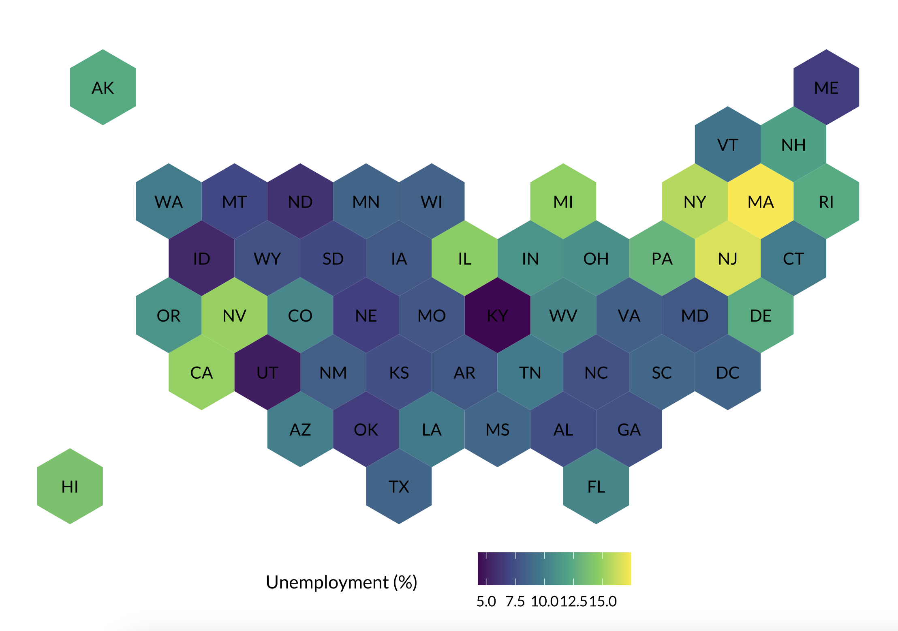
The graph is inspired by r-graph-gallery.com website. It shows a great variety of (ggplot2) visualization, provides a lot of resources to create plots, and has articles that discuss the limitations of graphs as well. Have you ever seen a radar, a stream, or a sunburst chart? Visit the website and learn how to make them.
#Minimal code example #####
#There are many graphs (and code) to explore on:
#www.r-graph-gallery.com3.7 Mosaic plots
Mosaic (or spine) plots are a great way to visualize the relationship between two categorical variables. The area of each rectangle is proportional to the number of observations in each category. I used the titanic data to depict the effect of passenger’s sex on survival. Obviously, more women than men survived the accident.
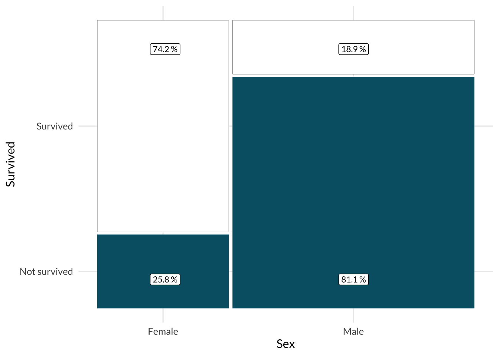
The ggmosaic() package provides the corresponding geom (Jeppson, Hofmann, and Cook 2021). The package is a great tool to create mosaic plots and it is easy to use. The minimal code example shows how to create a mosaic plot with the titanic data. The product function is used to create a two-way table.
#Minimal code example #####
library(ggmosaic)
ggplot(data = titanic) +
geom_mosaic(aes(x = product(Sex),
fill = Survived))3.8 Ridge plots
A ridge plot is a great way to visualize the distribution of a numerical variable across different categories. The plot shows the density of the variable for each category. In the example plot, I used the gapminder data to visualize the distribution of life expectancy across different continents. Europe has the highest, while Africa had the lowest life expectancy. The distribution is much wider in Africa compared to other continents.
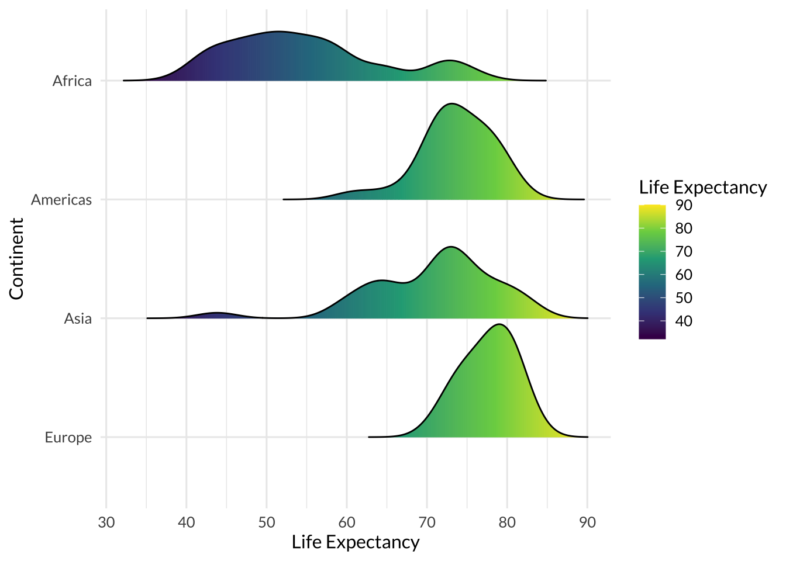
The ggridges package was developed by (wilke_ggridges_2018?) and provides many examples to create ridge plots (Wilke 2021). The package creates a ridge plot and fills the area under the curve with a gradient color. As the code from the ggridges vignette illustrates, explore how the weather (temperature) changes over a year.
#Minimal code example #####
library(ggridges)
#Minimal code by Claus Wilke:
ggplot(lincoln_weather, aes(x = `Mean Temperature [F]`, y = Month,
fill = stat(x))) +
geom_density_ridges_gradient(scale = 3,
rel_min_height = 0.01) +
scale_fill_viridis_c(name = "Temp. [F]",
option = "C") 3.9 Treemaps
A treemap is a great way to visualize hierarchical data. The area of each rectangle is proportional to the observed value. Before he was banned, Donald Trump was a huge fan of Twitter and Axios collected and categorized his tweets. Some tweets were about the media, democrats, and the grand old party (GOP), with further subgroups within each category. I used this data and the treemapify package to make a treemap (Wilkins 2021). Mr. Trump tweeted a lot about “the media” and the “Democrats” in 2019.
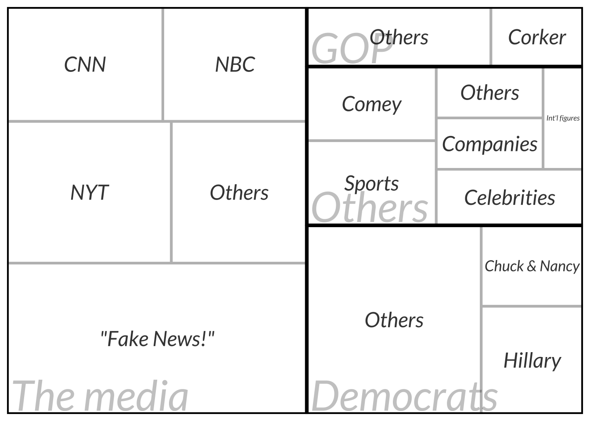
In the example below I used the gapminder data to visualize the GDP per capita and life expectancy of European countries in 2007. The treemapify package provides the geom_treemap() function to create a treemap. The geom_treemap_text() function adds labels to the treemap.
#Minimal code example #####
library(treemapify)
library(gapminder)
data <- gapminder::gapminder |>
dplyr::filter(year == 2007 & continent == "Europe")
ggplot(data, aes(area = gdpPercap,
fill = lifeExp,
label = country)) +
geom_treemap() +
geom_treemap_text(color = "white",
grow = TRUE)3.10 Waffle charts
An alternative for a pie chart is a waffle chart. The latter depicts values across different categories and the area of each rectangle is proportional to the observed value. In case of percentages, the area of each rectangle is proportional to the percentage value. My example shows the leaky pipeline in academia. Did you know that after each transition step in higher education (e.g., graduation, Ph.D.), more men than women remain in the system? The sex ratios become skewed till the end of the academic pathway. I used a waffle chart to illustrate the leaky pipeline for Germany in 2020.
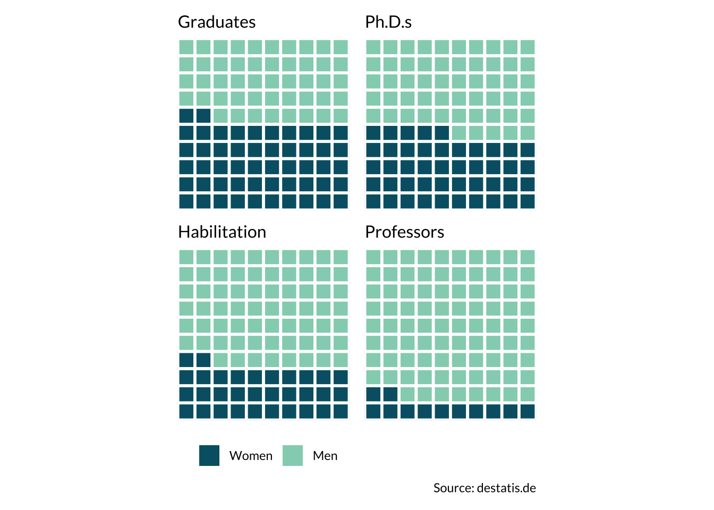
The waffle package provides the waffle() function to create a waffle chart (Rudis and Gandy 2017). The rows argument controls the number of rows in the chart. The minimal code shows how to create a waffle chart with a toy vector.
#Minimal code example #####
library(waffle)
parts <- c(66, 22, 12)
waffle(parts, rows = 10)3.11 Word clouds
A word cloud shows the frequency of words in a text. The size of each word is proportional to its frequency. The plot shows the word cloud of a children’s book that I made with the ggwordcloud package (Le Pennec and Slowikowski 2022). Witches and wizards play a big role in this book.
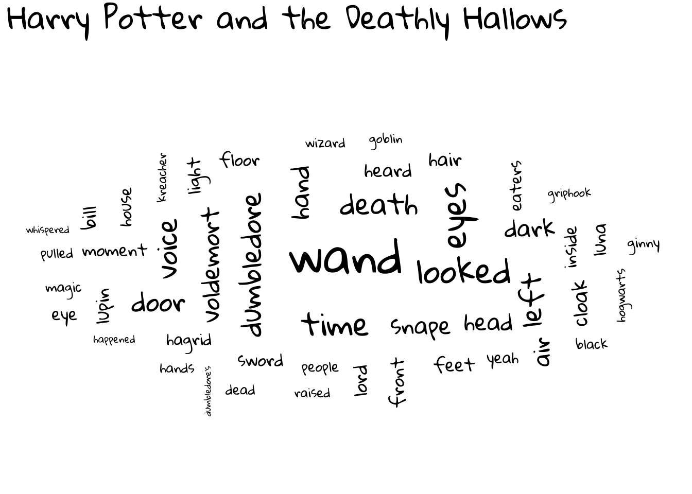
The ggwordcloud package provides the geom_text_wordcloud() function to create a word cloud. The size argument controls the size of the words. The minimal code example shows how to create a word cloud with the love_words_small data.
#Minimal code example by Erwan Le Pennec
library(ggwordcloud)
#set a seed (starting point)
set.seed(123)
ggplot(love_words_small, aes(label = word,
size = speakers)) +
geom_text_wordcloud() +
scale_size_area(max_size = 30)3.12 Summary
This blog highlighted packages to extend the possibilities of ggplot2, but there are too many to discuss them all. For example, ggtext helps to handle text (Wilke 2020); you can visualize the results of a survival analysis with survminer (Kassambara, Kosinski, and Biecek 2021); or create cool animations with gganimate (Pedersen and Robinson 2022).
Finally, go and visit the ggplot2 website to explore more extensions.